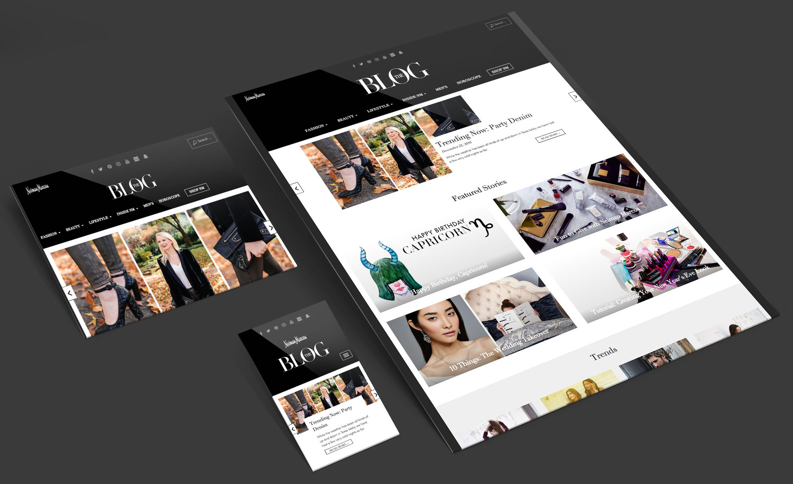
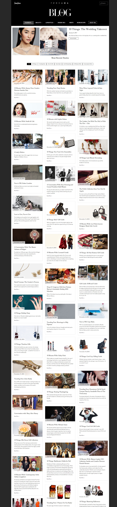
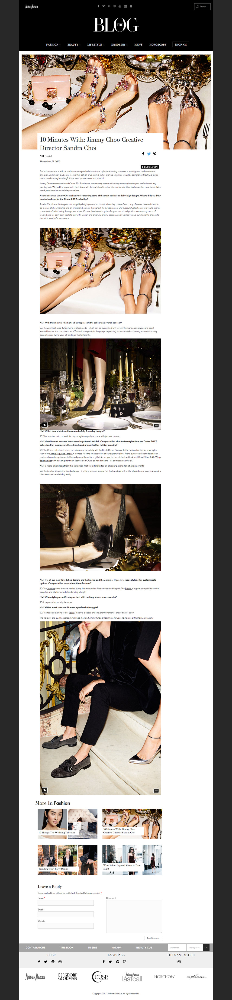

Neiman Marcus Blog
The goal of this project was to remake Neiman Marcus' blog to be more responsive and mobile friendly, as well as faster. My role was strictly front-end while I paired with Long Cheng, who implemented Wordpress PODS into the blog to run faster. I assisted with PHP templates for each post category page and also creating custom post types for bloggers to enter text and images into our templates. I used HTML, CSS3, Bootstrap, PHP and Javascript to create this site.
Category & Post Pages

